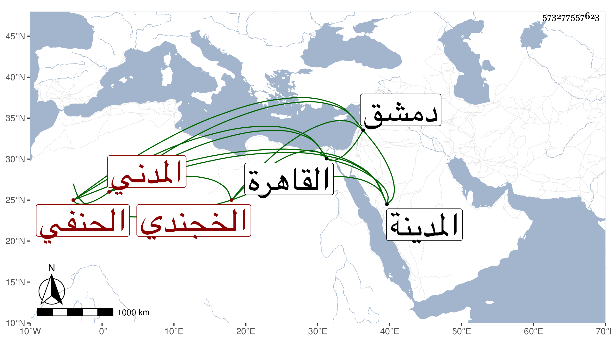

0902Sakhawi.DawLamic.ITO20230111-ara1.EIS1600.573277557623
Biography ID: 573277557623
184
أبو بكر بن محمد بن إبرهيم بن الجلال أحمد فخر الدين الخجندي المدني الحنفي ويسمى صديقا . ولد في رمضان سنة سبع وأربعين وثمانمائة بالمدينة وحفظ الكنز وعرضه فيها وأخذ بها عن عثمان الطرابلسي ومحمد بن مبارك في الفقه والعربية ودخل القاهرة ودمشق ثم حصل له خلل بعقله وأظنه في الأحياء .
